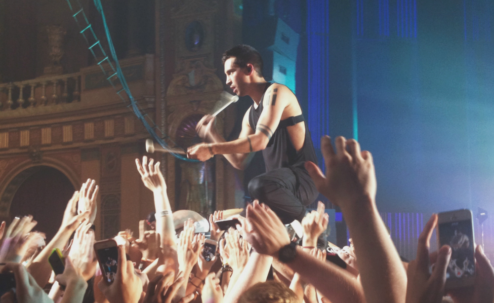

Twenty One Pilots at The Fillmore
I would consider myself a casual fan of Twenty One Pilots. Though I've seen some of my favorite bands this year, Twenty One Pilots put on what was, without a doubt, the best show I've seen in 2014.
I've been apart of many "dead fish" crowds. "Dead fish" crowds are my affectionate nickname for the crowds where people stand in general admission like a pack of sardines, not moving, regardless of what's happening on stage. This happens at shows where you would never expect that lack of enthusiasm from a crowd. Even when you're seeing a very popular band at an extremely small venue, where it's nearly impossible to get tickets, many people still seem to opt for the "dead fish" concert experience.
This Twenty One Pilots show was the furthest thing from a "dead fish" crowd that I've ever had the fortune to experience. There's a part at the end of the music video for "Car Radio" where the crowd just loses it. The really fantastic thing, is that when you see this song performed in person, the crowd does precisely the same thing. Similarly, slower songs like "House of Gold" and "Screen" were able to get the crowd in a sort of trance.
I'll always have respect for bands that perform well. But there's something to be said for those that go the extra mile and truly connect with their fans. I don't mean that in terms of going out of their way to meet them after the show, or anything of that nature. When I say that, I'm referring to how they're able to engage with the crowd during their performance.
When Tyler Joseph told the crowd to put their hands in the air, there was no awkward hesitation. Things like crowd surfing were taken to the next level, when drummer Josh Dun had a drumkit surfed out over the crowd so he could continue playing while the crowd held him up. At one point they even insisted that everyone in the crowd find someone nearby and put them on their shoulders. In all of these instances, the crowd were very willing participants who did not hesitate to have a good time.
If you want to see a show where you can jump around as much as you like, without being the live fish in a sea of dead fish, then please go see Twenty One Pilots. The energy of their performance has an incredible influence on anyone watching, and I think it would be impossible to walk out of a venue unsatisifed after seeing a band who so genuinely loves performing.